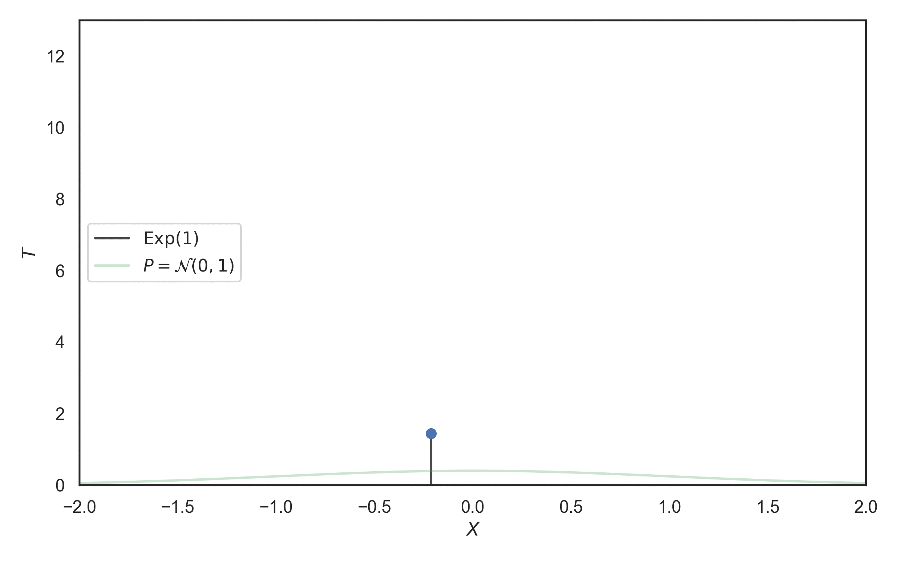
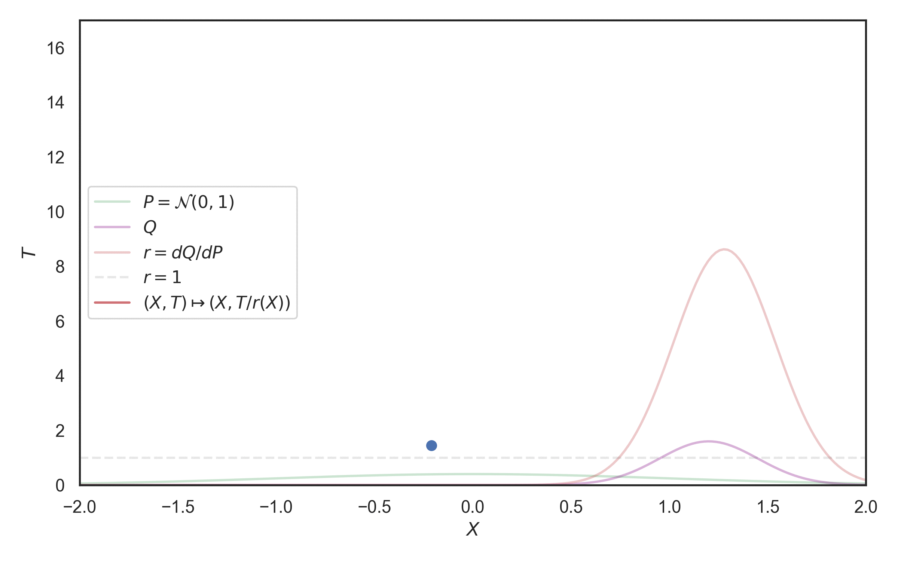
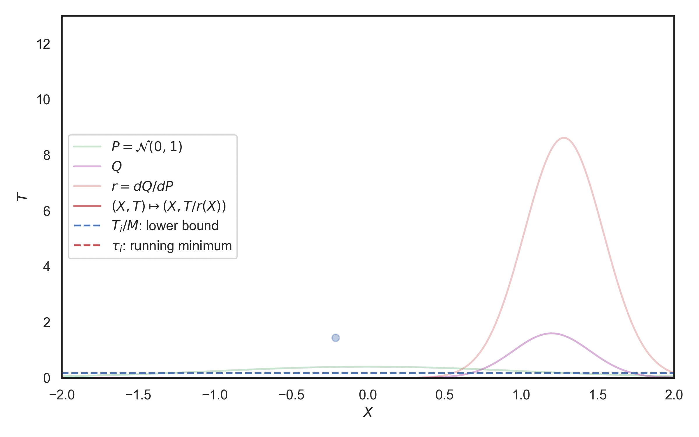
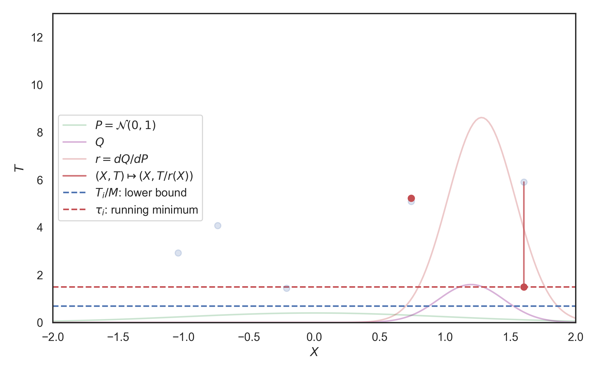

Let \(X \in \mathbb{R}\) with CDF \(F\). Then, \(F(X) \sim ?\)
\[ \mathbb{P}[F(X) \leq u] = \mathbb{P}[X \leq F^{-1}(u)] = F(F^{-1}(u)) = u \]
\(F(X) = U \sim \mathrm{Unif}(0, 1)\), hence \(F^{-1}(U) \sim X\)
Assumption: can simulate from \(\mathrm{Unif}(0, 1)\)
Let \(X \in \Omega, Q \ll P\) and \(r = dQ/dP\) with \(r < M\)
For \(i = 1, 2, \dots\) let \(X_i \sim P\) and \(U_i \sim \mathrm{Unif}(0, 1)\)
\[ K = \min\{k \in \mathbb{N} \mid U_i \leq r(X_i) / M \} \]
Then, \(X_K \sim Q\)
Assumption: can simulate from \(P\) and \(\mathrm{Unif}(0, 1)\)
Hard.
(in general)
Example: \(X_i \sim P\) and need to pick one of them
Average sample complexity \(\mathbb{E}[K]\) is at least \(\Vert r \Vert_\infty\)
In what settings can we do better?

Idea: Start with a \(P \times \lambda\) process and "turn it" into a \(Q \times \lambda\) process!
\(\Pi = \{(X_i, T_i)\}\) be a \(P \times \lambda\) process.
\(g(x, t) = (x, t / r(x))\) where \(r = dQ/dP\)
Mapping theorem: \(g(\Pi)\) is a \(Q \times \lambda\) process.

First arrival of the mapped process: \[ K = \mathrm{argmin}_{k \in \mathbb{N}}\left\{\frac{T_k}{r(X_k)}\right\} \]
\(X_K \sim Q\)
To find it: \[ \tau_k = \mathrm{min}_{i \in [1:k]}\left\{\frac{T_i}{r(X_i)}\right\} \]
For \(r < M\): \[ \frac{T_K}{r(X_K)} \geq \frac{T_K}{M} \]


Superlevel set \[ S_r(h) = \{x \in \Omega \mid r(x) \geq h\} \]
Best restriction: \(X_{i + 1} \in S_r(T_i / \tau_i)\)
Might be easier to use some bounding sets \(B_{i + 1} \supseteq S_r(T_i / \tau_i)\)